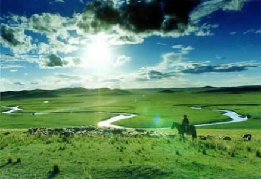
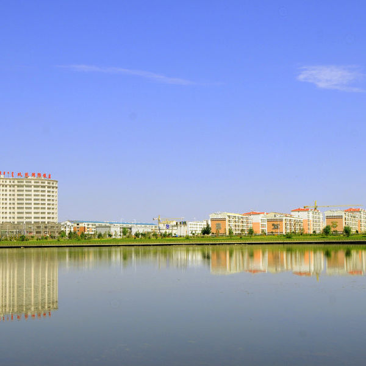
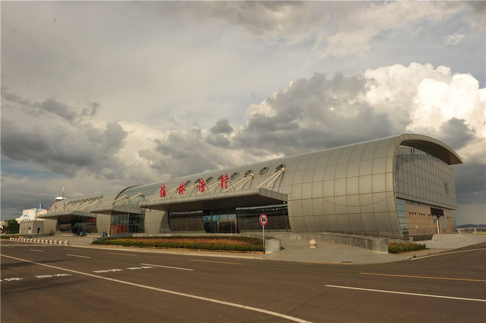
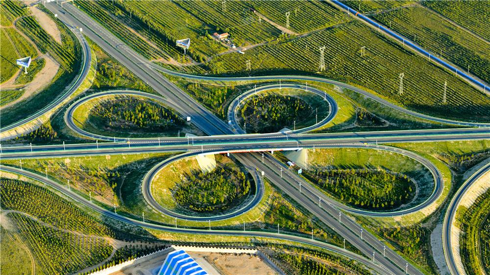
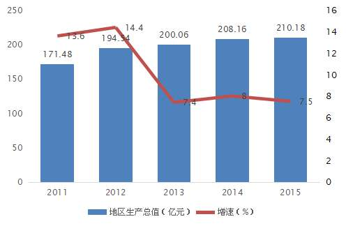
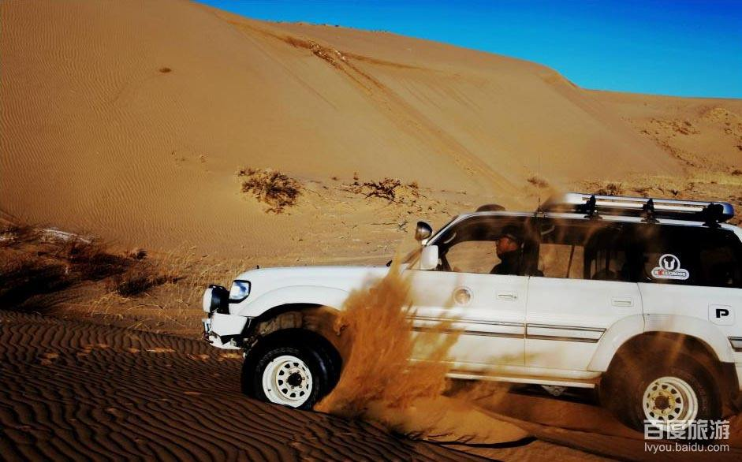
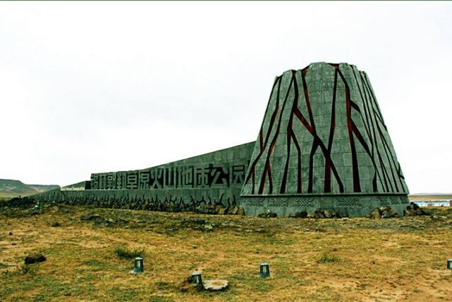
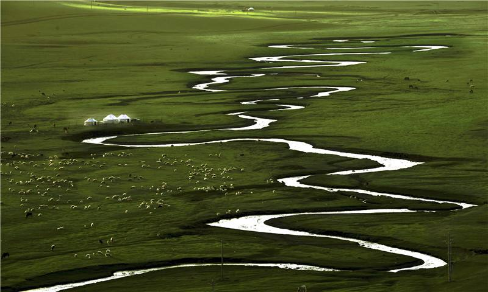

锡林浩特
锡林浩特市位于内蒙古自治区中部，首都北京的正北方，是锡林郭勒盟盟府所在地。地理坐标为北纬43°02′—44°52′，东经115°18′—117°06′。
市境南北长208公里，东西长143公里，总面积14785平方公里，其中城市建成区面积37.5平方公里。2015年末常住人口26.3万人，
含蒙、汉、回、藏、布依、朝鲜、维吾尔、鄂温克等30个民族，其中蒙古族人口5.09万人，占总人口的19.4%，是一个以蒙古族为主体、汉族占多数、多民族聚居的边疆少数民族地区。先后荣获中国优秀旅游城市、全国科技先进市、全国双拥模范城、全国法治县（市区）、全区文明城市、卫生城市、园林城市等称号，2010年被中国马业协会授予“中国马都”称号，素有“草原明珠”的美誉。

锡林浩特市地势南高北低，南部为低山丘陵，北部为平缓的波状平原，平均海拔高度988.5米。地处中纬度西风气流带内，属中温带半干旱大陆性气候，年平均降水量294.9毫米，无霜期110天。 可利用草场面积2068万亩、林地47万亩、耕地25.5万亩，动植物资源多样，草原类型齐全。全年空气质量优良天数345天，平均空气质量优良率95.3%，人均城区公园绿地面积为17.9 平方米， 绿化覆盖率为36.1%。年水资源总量2.6亿立方米，可用量1.56亿立方米。锡林河水库库容2003万立方米，年可供水量为875万立方米。
建制沿革
锡林浩特地区新石器中、晚期，今锡林河水库西侧发现有人类活动遗址。先后出土砍砸器、刮削器及石核、石片等石器，证明距今4000~6000年以前已有人类在此繁衍生息，从事游猎养畜和原始手工业生产。

汉为上谷郡北境，晋为拓跋氏地，隋及唐初为突厥所据。辽为上京道西境，金为北京路西北境，元属上都路，明入于蒙古。清为蒙古阿巴哈纳尔部驻地。
康熙六年（1667年），诏授札萨克多罗贝勒世袭罔替，遣官指示阿巴嘎部移牧他所，以旧牧地给阿巴哈纳尔。栋伊思喇布掌左翼，佐领九，驻乌勒陀罗海（《大清会典》作阿尔噶灵图山）。色棱墨尔根掌右翼，佐领七，驻昌山（又名永安山）。阿巴哈纳尔左翼设旗，自康熙六年（1667年）至公元1946年，12代札萨克共执政280年。阿巴哈纳尔左翼旗庙由贝子爵管辖，故锡林浩特地区得名贝子庙。
1933年，锡林郭勒盟建立伪蒙疆联合自治政府。贝子庙被伪蒙疆联合自治政府控制。1938年，驻贝子庙日本军队组织伪锡林郭勒盟政府、伪旗政府。
1946年，内蒙自治运动联合会转移到贝子庙，锡盟分会和政府组织工作队在阿巴哈纳尔左旗改造旧政权，建立了人民民主政权。阿巴哈纳尔左旗支会隶属锡林郭勒盟分会。
1947年，在贝子庙成立了中共锡（锡林郭勒）、察（察哈尔）、巴（巴彦塔拉）、乌（乌兰察布）工委。1948年，阿巴哈纳尔左旗归中部中心旗工委。
1949年，阿巴哈纳尔左翼旗划归锡林郭勒盟中部联合旗;阿巴哈纳尔右翼旗划归锡林郭勒盟西部联合旗。1952年5月26日，经内蒙古自治区人民政府批准，中部和西部联合旗合并，统称锡林郭勒盟西部联合旗。
1953年9月15日，经锡林郭勒盟人民政府批准，贝子庙改称锡林浩特（乡科级），统称西部联合旗锡林浩特人民政府。1956年7月3日，经国务院批准，将西部联合旗改称阿巴嘎旗。同年8月21日锡林浩特受锡林郭勒盟直接领导，乡科级建制不变。
1959年4月15日，锡林浩特升格为旗（县）级浩特，盟直接管辖。
1963年10月23日，经国务院批准，锡林浩特改设为阿巴哈纳尔旗。1979年12月14日，阿巴哈纳尔旗的“哈”字改为“嘎”字。
1983年10月10日，经国务院批准，撤销阿巴嘎纳尔旗，改设锡林浩特市（县级）。
行政区划
锡林浩特市辖3个苏木： 朝克乌拉苏木、宝力根苏木、巴彦宝拉格苏木 ；1个镇：阿尔善宝拉格镇； 7个街道：希日塔拉街道、宝力根街道、杭盖街道、楚古兰街道、额尔敦街道、南郊街道、巴彦查干街道； 6个国有农牧场：白音锡勒牧场、白银库伦牧场、毛登牧场、贝力克牧场、沃原奶牛场、蔬菜农场。
自然资源
主要矿产有石油、煤炭、锗、钼、铬等30余种。煤炭探明储量337亿吨，其中胜利煤田224亿吨，是目前全国煤层最厚、储量最大的褐煤煤田，也是内蒙古自治区3个200亿吨以上煤田之一，已列入国家大型煤电基地。石油探明储量2亿吨。锗探明储量3300吨，占全国储量的68%，占世界储量的38%。铬探明储量137万吨。钼探明储17万吨。锡铜储量超2万吨。萤石储量400万吨。是东北、华北地区重要的资源接续地和能源后备区。
风能太阳能
太阳能资源为一类地区，年发电有效时数达3000小时左右，年太阳辐射总量平均达到150千卡/平方厘米以上，适宜建设大型光伏产业基地。风能资源富集，总蕴藏量达2.5亿千瓦，年平均风速3.5米/秒，70米高度年平均风速8.9米/秒，年有效风能利用小时数达到3000小时左右，局部达到3300小时，规划装机容量1000万千瓦，是自治区规划装机百万千瓦风电基地之一。
锡林浩特市是国家重要的绿色农畜产品生产基地，可利用优质天然草场面积2068万亩。野生动物主要有天鹅、灰鹤、苍鹰、百灵鸟、黄羊、袍子、獾子等。野生种子植物624种，常见植物30种，其中天然药用植物有黄芪、甘草、防风、知母、黄芩、柴胡等，天然食用植物有白蘑、黄花、蕨菜等，生物具有多样性。
交通运输
铁路
已建成锡林浩特至桑根达来铁路、锡林浩特至多伦铁路、锡林浩特至乌兰浩特铁路3条国家I级铁路。
锡林浩特至二连浩特铁路已进入验收阶段，进京快速客运铁路正在大力推进中。锡林浩特市目前已开
通锡林浩特至呼和浩特至包头、锡林浩特至乌兰浩特往返快速旅客列车，铁路运输区域中心地位正在形成。

航空
锡林浩特机场为4C级机场，可起降波音737-800以下机型客机。航班可通往北京、天津、呼和浩特、
西安、沈阳、大连、广州、上海等地。计划开辟锡林浩特至乌兰巴托、港澳台等临时国际航线。

公路
锡林浩特市境内公路总里程1367公里，国道207、303和省道514贯穿市境，锡林浩特至张家口高速公
路可连通北京，丹东至锡林浩特高速2016年底全线通车。辐射北通二连浩特、珠恩嘎达布其两个对蒙
一级陆路口岸，东连东北三省、西接呼包鄂地区、南达京津唐的高等级公路运输通道已经形成。

经济
2015年全市地区生产总值达到210.18亿元，按可比价格计算（下同），同比增长7.5%；其中第一产业增加值16亿元，同比增长5.5%；
第二产业增加值105.64亿元，同比增长8.0%；第三产业增加值88.54亿元，同比增长6.6%。三次产业结构为7.6:50.3:42.1。人均生产总值12278美元，同比增长6.4%。
全市地方财政总收入累计完成40.38亿元，全市公共财政预算收入完成26.45亿元；公共财政预算累计支出31.79亿元。地方财政总收入占GDP比重为19.12%。
粮油产量3.40万吨，其中：粮食产量3.37万吨。蔬菜产量5.50万吨。牧业年度牲畜总头数169.04万头（只），肉类总产量2.5万吨，奶类产量14万吨，羊绒毛产量1430吨，皮张产量87.38万张。
全年造林面积3万亩;其中：当年新增封山育林项目面积2万亩,人工造林面积1万亩。
原煤产量2621.2万吨、天然原油产量77.1万吨、发电量41.15亿千瓦时，全年全部工业增加值89.64亿元，同比增长7.9%。
正在建设总投资近200亿元的神华、大唐、北方、蒙能等四组共4660兆瓦机组交直流线路坑口电厂和总投资110.69亿元的交直流两条分别向山东、江苏的输电通道。

锡林浩特市
公路货运量1.2亿吨，公路货运周转量244.17亿吨公里，公路客运量458.03万人，公路客运周转量2.85亿人公里。 本地固定电话用户达6.3万户。全年函件达88.17万件，订阅报刊752.3万份，订阅杂志22.08万份。 批发和零售业增加值完成16.94亿元；社会消费品零售总额57.19亿元。 全年共接待游客401.1万人次，实现旅游收入63.4亿元。 全市人民币存款余额249.5亿元，贷款余额285.1亿元。
锡林风景线
锡林风景线项目以“享受草原游览乐趣，尽览沿途壮美景观”为规划理念，将全市精品旅游资源串点成线，打造全域景区。
1.浑善达克沙地
浑善达克沙地是中国十大沙漠沙地之一，是离北京最近的沙源。景观奇特，被称为“塞外江南”和“花园沙漠”。

2.白银库伦遗鸥保护区
白银库伦遗鸥自然保护区位于锡林浩特市南部的白银库伦牧场境内，北临灰达公路、西临207国道，南与浑善达克沙地相接壤，东以平顶山为界。是一个以保护遗鸥、鹤类等珍稀鸟类及其赖以栖息繁殖的湿地、草原生态系统为主的综合性自然保护区。
3.柳兰草原
柳兰草原位于G207沿线55公里处，与国道相连，交通便捷；规划内地形地貌丰富，南部以起伏的丘陵地貌为主，北部地势平坦；景区内植物物种丰富，草质优良，具有天然的景观优势。
4.火山地质公园东区（鸽子山景区）
火山地质公园东区主要包括鸽子山、大敖包、杨树沟等景点。其中以鸽子山为代表的火山群在独特性、完整性和稀有性方面为世界罕见。

5.大锡林九曲
大锡林九曲景区包括现锡林九曲、百花滩、那达慕等景区范围。锡林九曲位于锡林浩特市东南13公里处，河床两侧生长着大量的芦苇及其它水生植物，是远近闻名的旅游景区。
百花滩湿地观光区位于白音锡勒自然保护区的核心区内，属严格保护的范畴，主要以草原湿地观光及游牧文化为主要亮点。
每年的6-7月，锡林浩特都会举办盛大的那达慕大会，内容包括蒙族传统体育项目、马术竞赛、歌舞表演等。那达慕是蒙古族的传统节日，已纳入国家非物质文化遗产名录。

社会
教育事业
全市高等院校一所，2015年全年招收学生3343人，2015年末在校学生8274人、毕业学生2417人。中等职业教育（学校）2所， 在校生数1410人。特殊教育学校1所，在校生数134人。高中4所，在校生数11059人。初中5所（含九年一贯制学校初中部分）， 在校生数10196人。小学13所（含九年一贯制学校初中部分），在校生数17053人。幼儿园30所，在园生数5486人。全市适龄儿 童入学率100%。
卫生事业
2015年末全市拥有医院、卫生院、保健所、服务站等卫生机构31所；床位数1310床；从业人员数2831人；卫生技术人员2328人； 执业医师775人；注册护士996人。
文体事业
2015年全市有乌兰牧骑演出队伍1支，公共图书馆（室）77个，其中图书馆3个（锡林郭勒职业学院图书馆、锡林郭勒盟图书馆、锡林浩特市图书馆），公共图书馆（室）共藏书118万余册（件）。 2015年《锡林郭勒日报》汉文版日发行量17884份，蒙文版日发行量9800份；《锡林郭勒晚报》日发行量9480份。承担无线发射广播电视节目的台站5座；有线电视台1座。每年有极具文化内涵和 民族特色的传统“祭敖包”仪式和盛大“那达慕”活动；有“吉祥草原·锡林郭勒那达慕”、冰雪文化节、国际游牧文化节等品牌活动， 2011年获得“最具魅力节庆城市”荣誉称号。2013年成功承办全国 马术大会、全区第八届少数民族传统体育运动会，2014年以来每年承办四国女篮国际对抗赛、全国汽车场地越野锦标赛、CCTV《寻宝》—走进锡林浩特、中国马术大赛、中国马都大赛马、中国新丝 绸之路锡林郭勒草原畜牧业创新品牌展示交易会等一系列重大赛事、展会活动，每年夏季都有大型马文化综艺实景剧目《千古马颂》演出。人民生活。